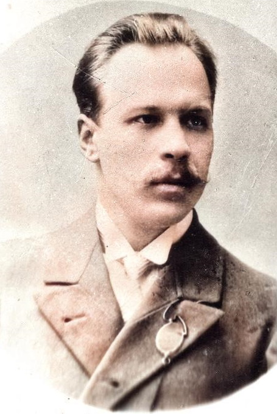

Поет, перекладач, театрознавець, літературний і громадський діяч
Поезія Миколи Вороного — яскраве, самобутнє явище української літератури другої половини XIX — початку XX ст. Його естетичні відкриття засвідчили вагу новаторського досвіду та співзвучність його творчості світовому мистецтву.
Микола Кіндратович Вороний народився на Катеринославщині в родині ремісника. Батько походив із кріпаків, мати — з роду освітнього діяча П. Колачинського, ректора Київської академії.

Харківське реальне училище, потім Ростовське. За зв'язки з народниками та поширення забороненої літератури виключений і поставлений під нагляд поліції.
Навчався у Віденському та Львівському університетах. Зблизився з Іваном Франком, який дуже вплинув на його погляди. Працював у Науковому товаристві ім. Шевченка, режисером театру «Руська бесіда», редактором журналів.
Опублікував перший вірш — «Не журись, дівчино».
Написав відкритого листа до письменників із закликом оновити українську літературу.
Видав альманах «З-над хмар і долин».
Збірки «Ліричні поезії» (1911) та «В сяйві мрій» (1913) поєднали модерністську естетику з патріотичною та філософською тематикою.
Брав активну участь у революції, допомагав організовувати перше ядро Центральної Ради.
Емігрував до Варшави та Львова, викладав у драматичній школі ім. М. Лисенка. 1926 року повернувся в Україну.
1934 року репресований, 7 червня 1938 року розстріляний.
Був актором труп М. Кропивницького, П. Саксаганського, викладав у театральній школі М. Садовського. Як театрознавець написав праці:
О. Білецький називав поезію Вороного «високохудожньою, що збагатила українську літературу новими темами, формами й образами». Архів поета зберігається в Інституті літератури ім. Т. Шевченка.